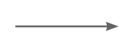
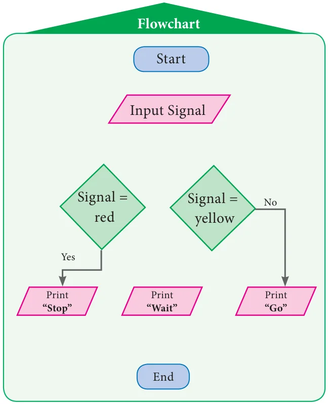
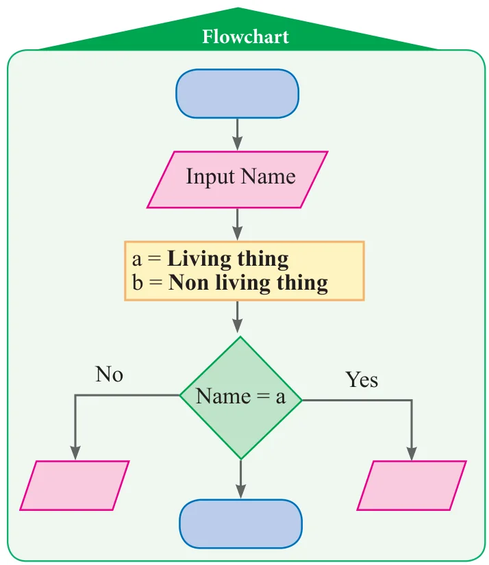

- Match the following:
Symbols Uses (i) 
(a) Input / Output (ii) (b) \(c = a + b\) (iii) (c) Start / End (iv) (d) \(a >= 0\) (v) (e) It shows direction of flow - The steps of withdrawing cash from your saving bank account using ATM card are explained in the figures given below. Construct an appropriated flow chart.

- Using given step by step process to recharge mobile phone , draw a sequence flowchart.
Step by Step process
- Login the mobile recharge web browser
- Select prepaid or postpaid
- Enter mobile number
- Select operator and browse plans to choose your recharge plan
- Enter amount to recharge
- Proceed to recharge
- Complete the direction of the flowchart using arrows for the flow chart explaining the traffic rule given below.

- Complete the given flowchart, input names of things and check whether it is living or non - living.

- Complete the given flowchart.
- Fill in the flow chart to print the average mark by giving your I term or II term marks as inputs.

- Construct the flow chart to print teachers comment as “very good” if your average mark is above 75 out of 100 or else, as “still try more” can be inserted in the flow chart with earlier one.

- Fill in the flow chart to print the average mark by giving your I term or II term marks as inputs.
- A merchant calculates the cost price (CP) and the selling price (SP) of the product bought by him. Construct the flow chart to print ‘PROFIT’ if the selling price (SP) is more than the cost price (CP) or else ‘LOSS’.